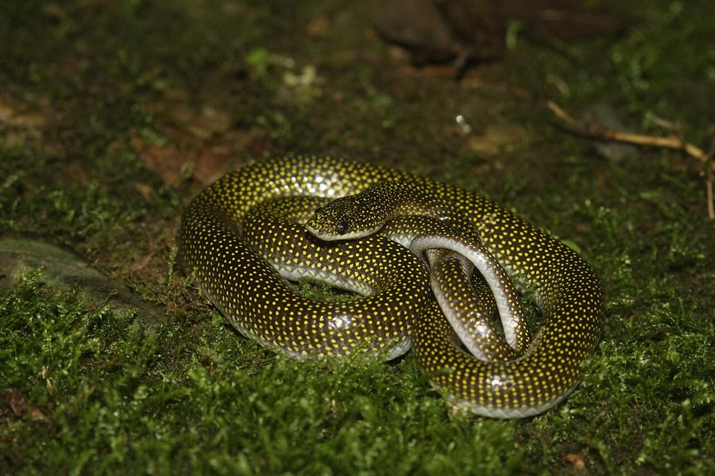

ट्विन-स्पॉटेड वुल्फ़ स्नेकTwin-spotted Wolf Snake
Lycodon jara · Colubridae · REP-0059

- Scientific name वैज्ञानिक नाम
- Lycodon jara (Shaw, 1802)
- Family कुल
- Colubridae
- Hindi हिंदी
- ट्विन-स्पॉटेड वुल्फ़ स्नेक
- Local names स्थानीय नाम
- twin-spotted wolf snake, jara wolf snake
- Status here यहाँ की स्थिति
- native
- Movement आवागमन
- Resident, here all year
- Known from कहाँ दर्ज
- Others have published records from the wider Awadh–Purvanchal plain, none yet from Basti–Ayodhya अवध–पूर्वांचल से दूसरों के प्रकाशित अभिलेख, बस्ती–अयोध्या से अभी नहीं
- IUCN IUCN
- LC
- Review समीक्षा
- not yet reviewed
When to look कब देखें
Expected mainly in May, June, July, August, September, October. मुख्यतः मई, जून, जुलाई, अगस्त, सितंबर, अक्टूबर में अपेक्षित।
Tell it apart from इनसे अलग पहचानें
ट्विन-स्पॉटेड वुल्फ़ स्नेक / Twin-spotted Wolf Snake
Lycodon jara (Shaw, 1802) — Colubridae
ट्विन-स्पॉटेड वुल्फ़ स्नेक — उत्तर और पूर्वी भारत के तराई व नम वनों में रहने वाला एक छोटा और गैर-विषैला भेड़िया साँप। इसके प्रत्येक पृष्ठीय शल्क पर दो हल्के पीले या सफेद धब्बे होते हैं। स्मिथ (1943) के अनुसार नर की कुल लंबाई 535 मिमी और मादा की 550 मिमी तक होती है। वन्यजीव (संरक्षण) अधिनियम के तहत यह एक संरक्षित प्रजाति है।
Quick Identification त्वरित पहचान
| Feature | Description |
|---|---|
| Build & Size | Small colubrid snake; total length male 535 mm, tail 115 mm, female 550 mm, tail 105 mm (Smith 1943) |
| Dorsal Colour | Brownish or purplish-black above, stippled all over with white (yellow in life) (Smith 1943) |
| Dorsal Pattern | Small spots or short longitudinal lines, two on each scale (Smith 1943) |
| Ventral Colour | Upper lip and lower surface uniform white (Smith 1943) |
| Neck Pattern | A white collar always present in the young (Smith 1943) |
Field tip: Look for a slender dark wolf snake whose dorsal scales each bear a pair of tiny pale dots, giving a finely speckled appearance, lacking bold white bands (Smith 1943, p. 261).
हिंदी:
यह गहरे भूरे या काले रंग का एक पतला साँप है जिसके हर शल्क पर दो सफेद या पीले बिंदु होते हैं। इसका पेट सादा सफेद होता है।
Morphology आकारिकी
Measurements and scale counts recorded by Smith (1943, p. 261) for Lycodon jara:
| Measurement / Scutellation | Range |
|---|---|
| Total length male | 535 mm (Smith 1943) |
| Tail male | 115 mm (Smith 1943) |
| Total length female | 550 mm (Smith 1943) |
| Tail female | 105 mm (Smith 1943) |
| Scale rows | 17 17 15 (Smith 1943) |
| Ventrals | 167 to 188 (Smith 1943) |
| Subcaudals | 52 to 74 (Smith 1943) |
Smith (1943, p. 261) described the coloration: "Brownish or purplish-black above, stippled all over with white (yellow in life), the pattern being formed by small spots or short longitudinal lines, two on each scale; upper lip and lower surface uniform white; a white collar always present in the young."
Vocalisations
Not available in consulted sources.
हिंदी:
स्मिथ (1943) के अनुसार नर की कुल लंबाई 535 मिमी और मादा की 550 मिमी होती है। मध्य शरीर पर 17 शल्क पंक्तियां, 167 से 188 वेंट्रल और 52 से 74 सबकॉडल होते हैं। परामर्शित स्रोतों में आवाजों का कोई विवरण उपलब्ध नहीं है।
Behaviour & Ecology व्यवहार और पारिस्थितिकी
Not available in consulted sources.
हिंदी:
परामर्शित ऐतिहासिक स्रोतों में इसके प्राकृतिक व्यवहार का विशिष्ट विवरण उपलब्ध नहीं है।
Life Cycle / Phenology जीवन चक्र
Not available in consulted sources.
हिंदी:
परामर्शित स्रोतों में इसके जीवन चक्र का कोई विवरण उपलब्ध नहीं है।
Host Plants or Prey आहार
Not available in consulted sources.
हिंदी:
परामर्शित स्रोतों में इसके आहार का विशिष्ट विवरण उपलब्ध नहीं है।
Predators / Natural Enemies शत्रु
Not available in consulted sources.
हिंदी:
परामर्शित स्रोतों में प्राकृतिक शत्रुओं का कोई विवरण उपलब्ध नहीं है।
Agricultural / Human Relevance कृषि प्रासंगिकता
Conservation legal status: Protected under the Wildlife (Protection) Act, 1972.
हिंदी:
यह वन्यजीव (संरक्षण) अधिनियम, 1972 के तहत संरक्षित है। यह एक गैर-विषैला साँप है।
Expected Locally स्थानीय रूप से अपेक्षित
Not a field record. Written from published accounts for eastern Uttar Pradesh. No confirmed local sighting yet — if you have seen it, that is what the atlas needs.
अभी तक स्थानीय पुष्टि नहीं। यह विवरण प्रकाशित स्रोतों से है, किसी अवलोकन से नहीं।
GBIF holds published records from the wider plain: one photograph, 17 June 2026, Gainda Punarvas, Lakhimpur Kheri (iNaturalist 374558523). Smith (1943) recorded its range in the Eastern Himalayas as far west as longitude 85° E. A photograph with place and date would constitute a first record for the atlas.
हिंदी:
17 जून 2026 का गेंडा पुनर्वास (लखीमपुर खीरी) से एक फोटोग्राफिक रिकॉर्ड (iNaturalist 374558523) मौजूद है। स्मिथ (1943) ने पूर्वी हिमालय में इसका पश्चिमी विस्तार 85° देशांतर तक दर्ज किया था। बस्ती या अयोध्या से कोई रिकॉर्ड नहीं है। स्थान और तारीख के साथ एक फोटो एटलस के लिए पहला रिकॉर्ड होगी।
Distribution वितरण
Global range: Smith (1943, p. 261) recorded: "the Eastern Himalayas as far west as longitude 85° ; Bengal ; Assam."
In India: Eastern Himalayas, Bengal, and Assam as cited above.
In Uttar Pradesh: One photograph, 17 June 2026, Gainda Punarvas, Lakhimpur Kheri (iNaturalist 374558523). Smith (1943) recorded the species only as far west as longitude 85° E.
In Basti district / eastern UP: GBIF holds no record from Basti or Ayodhya.
हिंदी:
स्मिथ (1943) के अनुसार यह पूर्वी हिमालय (85° देशांतर तक), बंगाल और असम में पाया जाता था। उत्तर प्रदेश में लखीमपुर खीरी से 2026 का एक फोटो रिकॉर्ड है, किंतु बस्ती या अयोध्या से कोई रिकॉर्ड नहीं है।
Research Questions शोध प्रश्न
- How does the Lakhimpur Kheri photograph (at approximately 80.7° E) extend the known western distribution beyond historical limits? / लखीमपुर खीरी का फोटो रिकॉर्ड (लगभग 80.7° पूर्व) इस प्रजाति के ज्ञात पश्चिमी वितरण को किस प्रकार आगे बढ़ाता है?
- What morphological details visible in live photographs separate Lycodon jara from sympatric Lycodon aulicus? / जीवित तस्वीरों में दिखने वाले कौन से शारीरिक लक्षण इस साँप को कॉमन वुल्फ़ स्नेक से अलग करते हैं?
- What habitat types are present around the Gainda Punarvas observation site in Kheri?
- What historical museum specimens exist from areas between Bihar and western Uttar Pradesh?
- What survey techniques are optimal for detecting secretive small colubrid snakes in Terai forests?
हिंदी:
1. लखीमपुर खीरी का फोटो रिकॉर्ड (लगभग 80.7° पूर्व) इस प्रजाति के ज्ञात पश्चिमी वितरण को किस प्रकार आगे बढ़ाता है?
2. जीवित तस्वीरों में दिखने वाले कौन से शारीरिक लक्षण इस साँप को कॉमन वुल्फ़ स्नेक से अलग करते हैं?
Similar Species मिलती-जुलती प्रजातियाँ
| Species | How to tell apart | हिंदी | |
|---|---|---|---|
| [[common_wolf_snake | Common Wolf Snake]] (Lycodon aulicus) | Distinct prominent white or yellow crossbands across brown dorsum; unspotted scales | कौड़िया साँप |
| [[barred_wolf_snake | Barred Wolf Snake]] (Lycodon striatus) | Body marked with regular narrow white or yellow crossbars that bifurcate laterally | बार्ड वुल्फ़ स्नेक |
Field rule: Lycodon jara lacks bold white crossbands and is characterized by brownish or purplish-black upperparts stippled with white, two spots or lines on each scale, and uniform white lower surface (Smith 1943, p. 261).
Taxonomy & Classification वर्गीकरण
Original description. Described by George Shaw in 1802 in General Zoology (vol. 3, pt. 2, p. 525), under the basionym Coluber jara, with type locality designated as Bengal.
Subspecies. Monotypic.
Family and order placement. Order Squamata, suborder Serpentes, family Colubridae, genus Lycodon.
Phylogenetic notes. Not available in consulted sources.
IUCN status rationale. Evaluated as Least Concern (LC) on the IUCN Red List (Captain 2010).
हिंदी:
जॉर्ज शॉ ने 1802 में इसका वर्णन किया था। यह कोलुब्रिडे परिवार का सदस्य है और आईयूसीएन रेड लिस्ट में संकट-मुक्त (LC) श्रेणी में दर्ज है।
Photo Gallery फोटो गैलरी
No photos yet — add field photos to media/species/twin_spotted_wolf_snake/ and run node scripts/sync_photos.js.
Photos needed आवश्यक फोटो
- [ ] Close-up of dorsal scales showing twin spots (दोहरे धब्बे दिखाने वाला पृष्ठीय दृश्य)
- [ ] Full-body view of live individual (जीवित सांप का संपूर्ण दृश्य)
References संदर्भ
- Shaw, G. (1802). General Zoology, or Systematic Natural History. Vol. III, Part II. Amphibia. G. Kearsley, London, p. 525 (as Coluber jara).
- Smith, M. A. (1943). The Fauna of British India, Ceylon and Burma, Including the Whole of the Indo-Chinese Sub-region. Reptilia and Amphibia. Vol. III.—Serpentes. Taylor & Francis, London, pp. 260–261 (as Lycodon jara).
- Whitaker, R. & Captain, A. (2004). Snakes of India: The Field Guide. Draco Books, Chengalpattu.
- Das, I. (2002). A Photographic Guide to Snakes and Other Reptiles of India. New Holland Publishers, London.
- Captain, A. (2010). Lycodon jara. The IUCN Red List of Threatened Species 2010: e.T176843A7315760. doi:10.2305/IUCN.UK.2010-4.RLTS.T176843A7315760.en
- GBIF Occurrence Data — Lycodon jara, India (2025).
Source file: species/fauna/reptiles/twin_spotted_wolf_snake.md